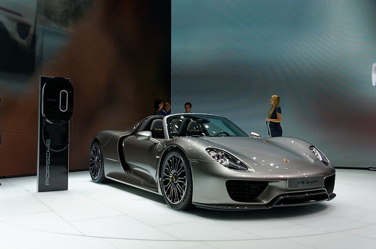

25 kwietnia 1931 roku Ferdinand Porsche założył firmę początkowo konstruującą samochody, a następnie z nakazu Adolfa Hitlera pojazdy wojskowe i pancerne dla III Rzeszy w czasie II wojny światowej konkurując z firmą Henschel.
Logo firmy Porsche, w kształcie herbu, które pozostało niezmienione do czasów współczesnych, w centralnej części ma umieszczonego biegnącego konia, który został zapożyczony z herbu miasta Stuttgart, w którym mieści się przedsiębiorstwo.
W 1947 roku przedsiębiorstwo przejął syn Ferdinanda – Ferry Porsche. Pierwszy model Porsche 356 z roku 1948 zawierał wiele części z Volkswagena Garbusa, w tym silnik (chłodzony powietrzem 4-cylindrowy boxer) oraz amortyzatory. Autorem projektu nadwozia był Erwin Komenda, który już poprzednio zaprojektował wygląd VW Garbusa. Model 356 w toku produkcji był modernizowany, wiele części Volkswagena zastąpiono własnymi konstrukcjami. Ostatnie wersje modelu 356 miały silnik własnej konstrukcji firmy Porsche.
W 1963 roku zaprezentowano model Porsche 911. Był to wóz sportowy z sześciocylindrowym silnikiem własnej konstrukcji umieszczonym z tyłu. To auto stało się światowym przebojem firmy Porsche, osiągając sukcesy nie tylko na torze wyścigowym, lecz przede wszystkim w sprzedaży.
W połowie lat 70 XX wieku powstała koncepcja stworzenia podziału na małe modele czterocylindrowe, średnie sześciocylindrowe i duże z silnikiem o ośmiu cylindrach. Mały model 924 pojawił się w 1976 roku a rok później duży 928. Polityka ta była kontynuowana aż do roku 1995, kiedy to po trzech latach zakończono produkcję Porsche 968 m.in. ze względu na niewielki popyt. Samochód poza stylistyką przypominającą Porsche 944 krytykowano za małą liczbę cylindrów.
Porsche od początku istnienia promuje lajfstajlowy wizerunek marki. Przejawia się to zarówno w organizacji klubów użytkowników pojazdów wyprodukowanych przez Porsche, jak i promocji produktów firmy nie związanych z motoryzacją. We współpracy z założoną przez Ferdinanda Porsche firmą PorscheDesign produkowane są zarówno gadżety dla kierowców i wielbicieli marki, jak i projektowane są przedmioty produkowane z logo Porsche przez inne firmy.
Równocześnie w większości krajów istnieją Porsche Kluby użytkowników i fanów samochodów Porsche. Polski klub – Porsche Club Poland z siedzibą w Lublinie istnieje od 2000 roku. PCP prowadzi aktywną działalność zarówno sportową, jak i promocyjną wśród użytkowników i fanów marki. Honorowymi członkami PCP są znani, wieloletni użytkownicy samochodów Porsche – m.in. Maryla Rodowicz i Sobiesław Zasada.